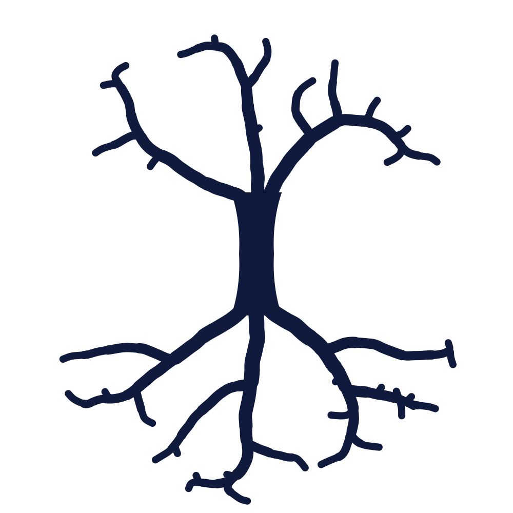

For CISOs and IT leads · November 2026
TDS
Data Sovereignty, beyond paper contracts.

For CISOs and IT leads · November 2026
Data Sovereignty, beyond paper contracts.
What TDS does
Route one
Names and numbers it finds leave as placeholders, and come back on your side.
Route two
Telling details leave blurred: a town becomes a region, a date becomes a month.
Route three
The most sensitive work stays, on a local model on your own machine.
Proof, with the gaps
0 / 249
Masked outputs that still leaked an identity.
n = 249 · 95% upper bound 1.2% · V11-4
0 / 400
Harmless texts wrongly flagged as secret.
n = 400 · 95% range 0.0–0.9% · N15
93 / 200
Reworded secrets caught: 46.5%. Our main gap.
n = 200 · 95% range 39.4–53.7% · N13
50 / 287
Texts kept local that could have left: 17.4%.
n = 287 · 95% range 13.2–22.3% · V11-2
Measured on synthetic data, round one. Each number is a row in our numbers ledger, with its commit, data hash and re-run command.
“We never fake our way. Numbers must be provable and true. Always.”
Our rule

Next step
Pick one workflow. We do the rest.
Henrik Thulin, True Data Sovereignty